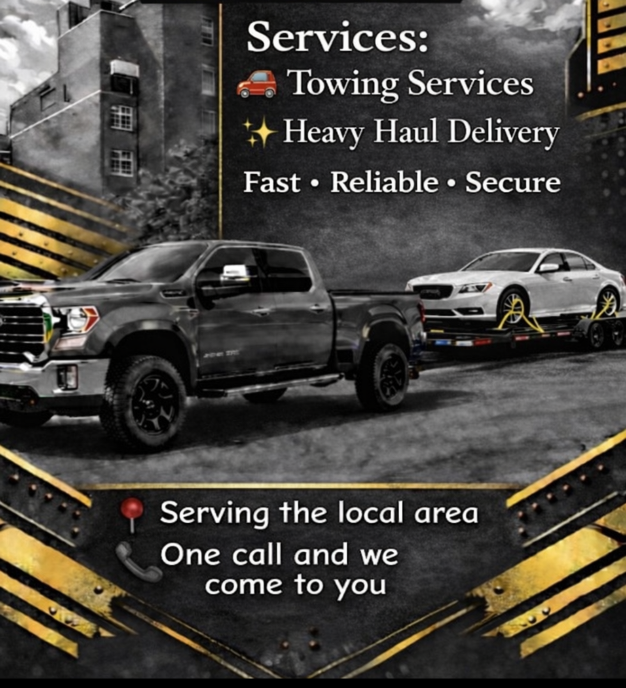
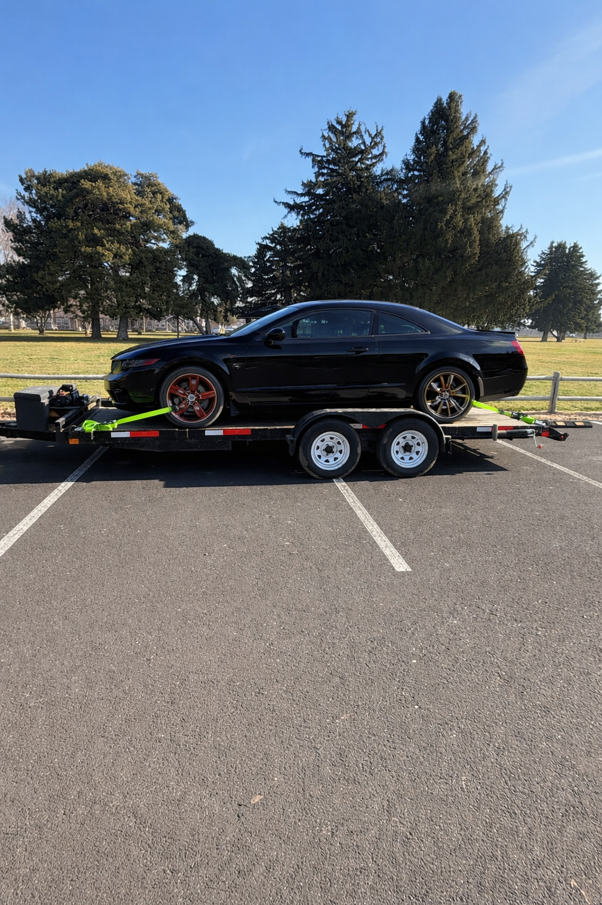
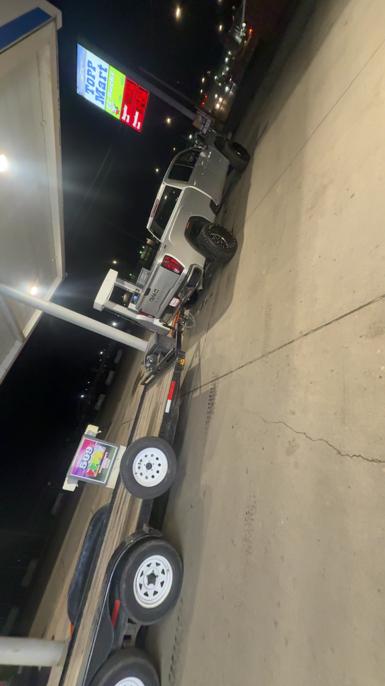
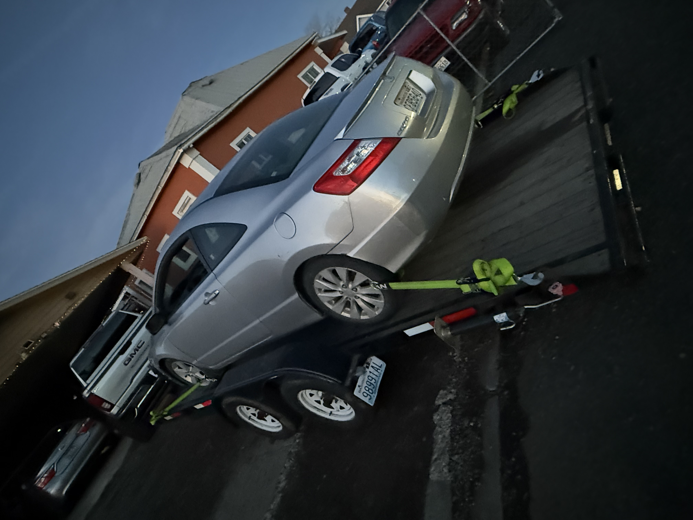
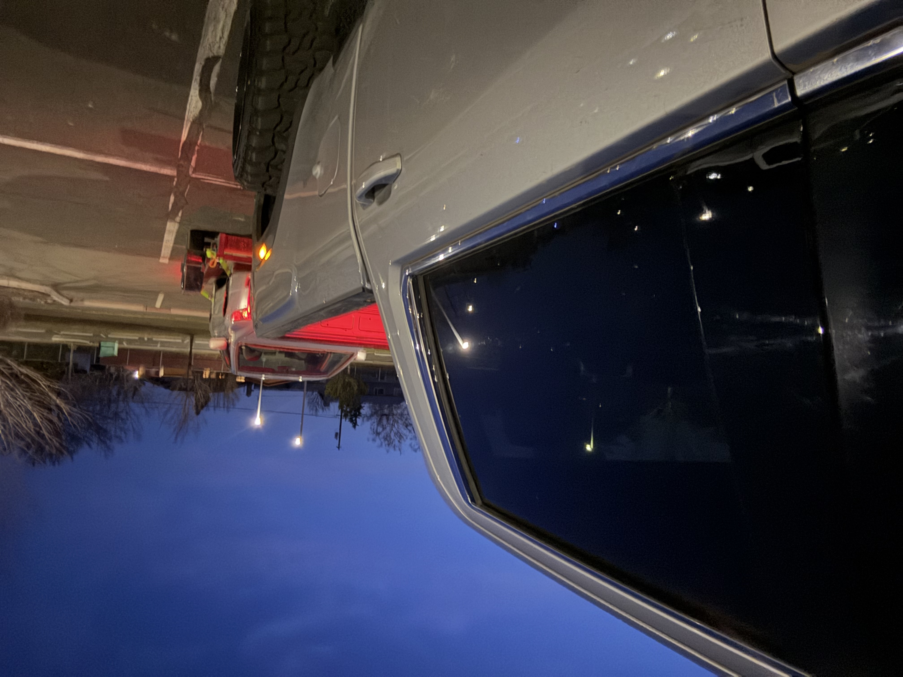
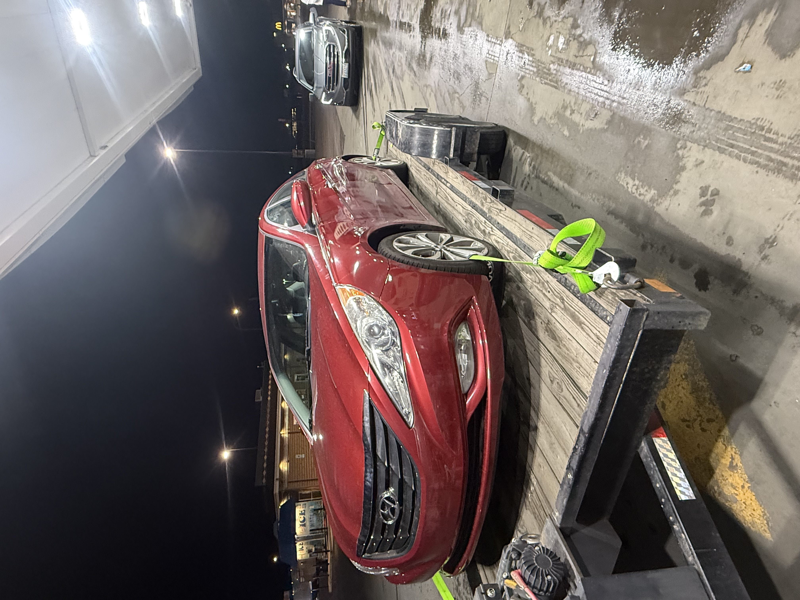
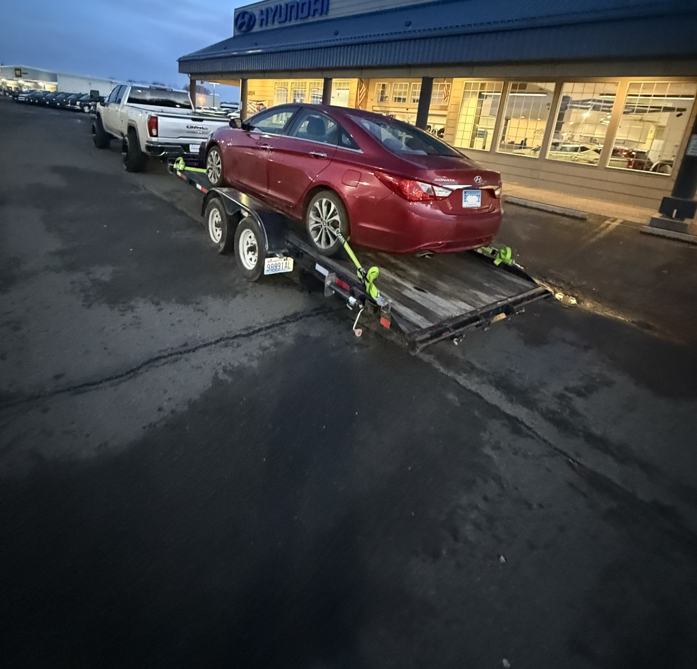

When your vehicle won’t move — we do.
At DT Towing, we deliver dependable towing and roadside assistance you can trust day or night, rain or shine. Whether you’re dealing with a breakdown, accident, or urgent recovery, one call gets help rolling your way fast.
Reliable Towing & Roadside Assistance.
We understand that vehicle trouble is stressful. Our trained operators respond quickly, handle your vehicle with care, and get you safely back on the road or to your destination.
Weekdays: 7 a.m. to 11 p.m.
Weekends: 24 hours
Service Area: Local & surrounding communities

Our Services
DT Towing Provides
We move the equipment that keeps your business running.
- Fast response times
- Friendly, professional operators
- Safe & damage-free towing practices
- Reliable equipment & modern fleet
- Honest pricing and dependable service
- Local experts who care about our community
- DT Towing — Fast. Safe. Reliable.
- One call gets help on the way.
Heavy Haul & Equipment Transport
DT Towing also specializes in Heavy Haul services for oversized and commercial loads. When the job requires power, precision, and experience — we’re ready.
Heavy Haul Capabilities
- Construction equipment transport
- Forklifts, tractors & machinery hauling
- Work truck & fleet transport
- Shipping containers & oversized loads
- Jobsite-to-jobsite equipment relocation
- Secure tie-downs and safety-first transport
Cost Calculator
10 miles and cannot exceed 100 miles
This is the rate charged for the towing service based on the location for pickup.Total Cost
Total towing costs displayed in USD
Get Your Car Towed with Ease
About Us
DT Towing is more than a towing company, it’s a family-driven business built on hard work, responsibility, and heart. As a father-to-be, family comes first in my life, and that same care and dedication go into every call I answer.
I know how stressful it is to be stranded on the road, especially when the people you love are waiting on you. That’s why I show up fast, work with integrity, and treat every vehicle as if it were my own. This isn’t just about towing cars — it’s about helping people when they need it most.
When you call DT Towing, you’re getting dependable service, honest work, and someone who truly cares about doing the job right.
My Service
Yakima County WA
Previous Customer Services





